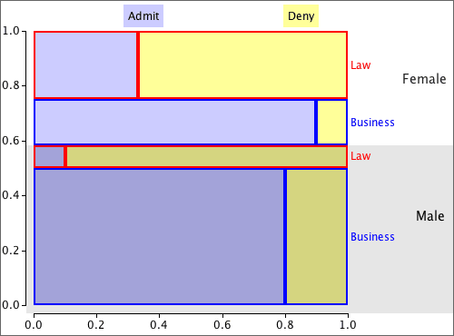

If you don't want to print now,
Different plotting symbols for a third variable
The simplest way to show the relationship between three numerical variables is based on a scatterplot of two of the variables, with the third variable being represented by differing symbols instead of identical 'crosses'. Possibilities are:
Although this kind of scatterplot is easy to draw, it is usually hard to interpret. The decision about which of the three variables to represent using the plotting symbol can make interpretation easier.
Parallel regression lines
Interpretation is considerably simplified if we constrain the regression lines for the different groups to have the same slope. In the diagram below, the difference between the groups is the same for all values of X.

Parallel lines are not appropriate descriptions of all data sets. Always check a scatterplot first.
Least squares
The principle behind fitting parallel lines to two or more groups is the same as in ordinary simple regression — we choose the parameters to minimise the sum of squared residuals (vertical distances between the data crosses and their corresponding line). The resulting formulae are complicated, but most statistical software will do the calculations for you.
Transformation of the response
It is much easier to interpret the parameters when parallel lines are fitted to different groups than when their slopes are different, but the data or the context may not justify such a simplification.


The least squares estimates of b0, b1 and b2 are the values that minimise this.

The solution can be obtained algebraically but the formulae are relatively complex and a computer should be used to evaluate the least squares estimates.
Relationship between two numerical variables
Scatterplots, correlation coefficients and least squares lines honestly summarise the relationship between two numerical variables, Y and X.
However they can sometimes give a misleading impression about the relationship. The problem arises when other variables are also associated with both Y and X.
The marginal and conditional relationships between Y and X are often different and may even be in a different direction.

Lurking (or hidden) variables
If the marginal relationship between X and Y is different from their conditional relationship given Z, but Z has either not been recorded or is ignored when analysing the data, then Z is called a lurking variable (or a hidden variable).
Always think about whether there might be a lurking variable, Z, that is distorting the relationship that is observed between Y and X.
Relationship between a numerical and a categorical variable
The previous page showed that the marginal relationship between two numerical variables, X and Y, can be very different from their conditional relationship for specific values of Z. The same can happen when X is a categorical variable, perhaps defining different groups.

Lurking variables and relationships between categorical variables
When the direction of the relationship reverses, the effect is called Simpson's paradox. As with other 'paradoxes', there is no real contradiction; it just takes a bit more thought to understand why your initial intuition is wrong.
College admission and gender
The table below describes admission rates of male and female students into the Business and Law Schools of a university.
| Admission | ||||
|---|---|---|---|---|
| Gender | Admit | Deny | Total | P(Admit) |
| Male | 490 | 210 | 700 | 0.700 |
| Female | 280 | 220 | 500 | 0.560 |
A naive examination of the data suggests that females have a lower probability of being admitted, but the opposite is true if the applicants are split into the two different degrees.
| Business | |||||
| Admission | |||||
|---|---|---|---|---|---|
| Gender | Admit | Deny | Total | P(Admit) | |
| Male | 480 | 120 | 600 | 0.800 | |
| Female | 180 | 020 | 200 | 0.900 | |
| Law | |||||
| Admission | |||||
| Gender | Admit | Deny | Total | P(Admit) | |
| Male | 010 | 090 | 100 | 0.100 | |
| Female | 100 | 200 | 300 | 0.333 | |
Proportional Venn diagram
Simpson's paradox is explained in the proportional Venn diagram below — in it, each rectangle is proportional to the number of women with these values for the variables.

Most of the males applied to the Business school (where admittance rates were high) and this increased their overall admittance rate compared to the females.
Analysis using 'lurking' variables
Variables are only called 'lurking' variables if they are either unrecorded or are unused when analysing the data. In this section's examples, we presented two analyses of the data sets:
Although the simple analysis can result in wrong conclusions, a full analysis using the 'lurking' variable is always more complex.
Do not ignore lurking variables to simplify the analysis — you could reach the wrong conclusions from the data.